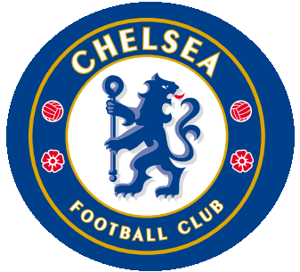

Sunderland v Chelsea
Chelsea close the 2025/26 Premier League season away at Sunderland on Sunday 24 May 2026. Kick-off is 16:00 in the UK.
- Date
- 24 May 2026
- Kick-off
- 16:00 UK
- Venue
- Stadium of Light

Blue Bridge Unofficial Chelsea Journal
Pride of London
Founded in 1905, Chelsea rose with Stamford Bridge at its heart and became one of England's defining clubs: shaped by royal blue identity, European finals, and generations of supporters who turned matchday into ritual.
Latest official updates: Senegal call-up for Sarr, Sunderland away travel notice, and final-day preview coverage now live.
Match Intelligence
Chelsea close the 2025/26 Premier League season away at Sunderland on Sunday 24 May 2026. Kick-off is 16:00 in the UK.
Chelsea beat Tottenham Hotspur (Premier League, 19 May 2026)
4,821 supporters boosted the noiseClub Newsroom
Mamadou Sarr and Nicolas Jackson have both been included in Senegal's World Cup squad, with Sarr involved in Chelsea's run-in.
Read on Chelsea FCChelsea supporters are advised on enhanced entry checks and major rail engineering works for the final-day away trip.
Read on Chelsea FCOfficial preview details kick-off time, UK coverage, streaming options, and Match Centre access for live updates and audio.
Read on Chelsea FCChelsea announced policy and verification changes aimed at improving fairness and anti-touting measures for supporters.
Read on Chelsea FCTransfermarkt Squad Values
Portraits and market values are aligned to Transfermarkt squad data checked on 23 May 2026.
Squad Data Lab
Transfermarkt total market value for Chelsea's listed first-team squad page.
Transfermarkt listed squad count on the 25/26 detailed squad page.
Calculated by Transfermarkt for the same current listed squad.
Tactical Notes
Caicedo, Enzo and Lavia give Chelsea an axis with control, coverage, and vertical passing under pressure.
Neto, Gusto, James and Cucurella stretch transitions quickly, while the front line rotates to create overloads.
Hato, Acheampong, Estevao and Gittens signal a long-term project with high technical ceiling and speed.
Trophy Cabinet
2012, 2021
1955, 2005, 2006, 2010, 2015, 2017
1970, 1997, 2000, 2007, 2009, 2010, 2012, 2018
FIFA Club World Cup 2025, FIFA Intercontinental Cup 2021
Champions League, Europa League, Cup Winners' Cup, Conference League
1965, 1998, 2005, 2007, 2015
From The Stands
Carefree, wherever we may be.
Club Identity
Royal blue is more than a shirt colour. It is a language carried from the gates of Stamford Bridge into continental nights and title runs.
This section now uses a calmer editorial rhythm with wider line-height, cleaner spacing, and less compressed display type so the club story feels deliberate and premium.
Verified Sources